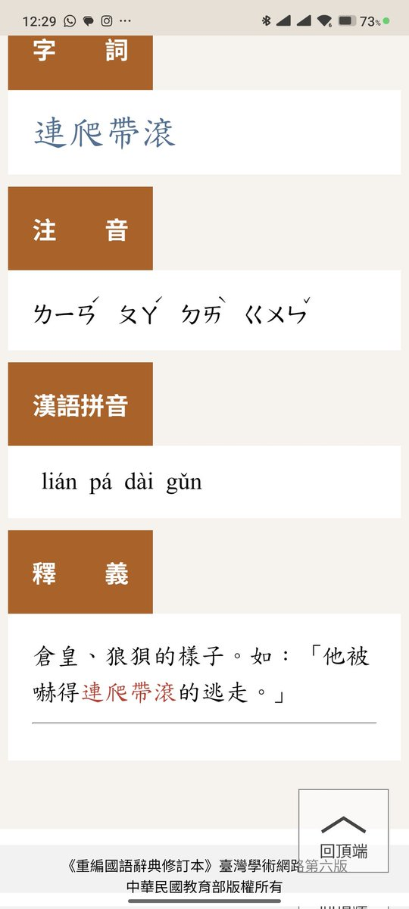

RedFox（2代目）🇲🇴🇭🇰
@FoxRed695449
@Excellentpigs @AgentKwok 請問哪裡造謠了？
「連滾帶爬」的意思是倉皇、狼狽的樣子，也沒問題啊
又請問何處提到台灣了？

司机不会开车！
@Excellentpigs
@FoxRed695449 @AgentKwok 论点是什么？？论点就是可以造谣吗？？残疾人坐飞机的很多，残疾人给机场意见的很多，残疾人网上造谣的就它一个！扯什么无障碍扯什么台湾怎样，这是它网上造谣抹黑的原因吗？有意见就去投诉反馈而不是在网上造谣抹黑，被揭穿又死不承认一堆繁体字洗白